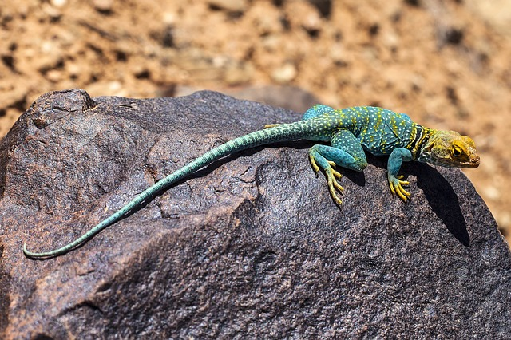

Задание 1. Создайте блок. Сделайте так, чтобы при прокрутке колеса
мыши над ним, блок менял цвет.
Задание 2. Создайте изображение. Добавьте возможность
масштабирования изображения при прокрутке колеса мыши

Задание 3. Создайте вертикальный слайдер, в котором элементы
прокручиваются с помощью колеса мыши. Учтите граничные условия


Задание 4. Создайте блок и разместите в нем изображения одинакового
размера. При прокрутке колеса мыши над блоком «активируйте» по
очереди изображения по кругу. Т.е. при прокрутке колеса вокруг первого
элемента возникает граница. При дальнейшей прокрутке у первого блока
граница исчезает и появляется у второго блока.